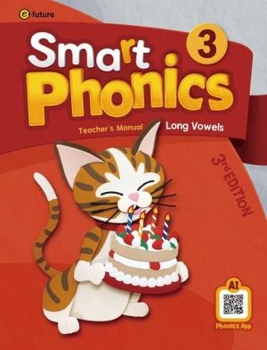
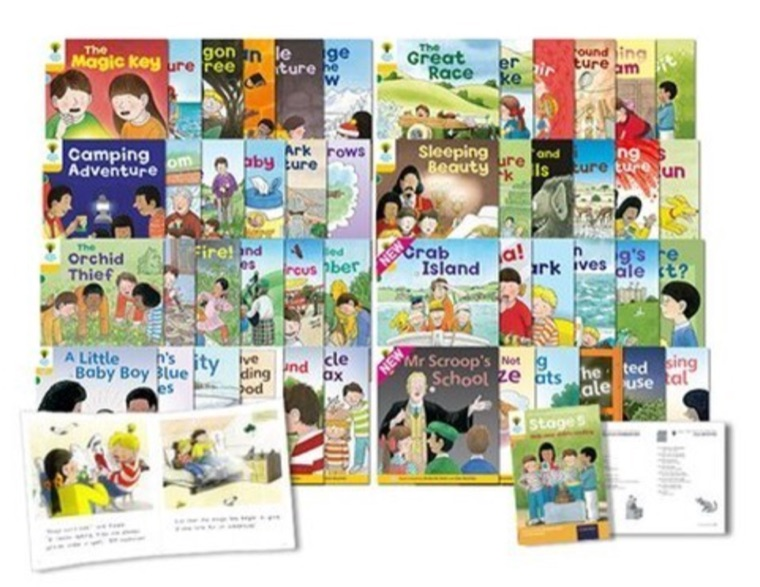
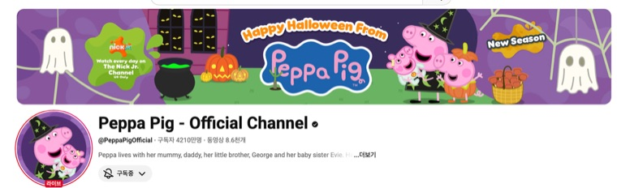
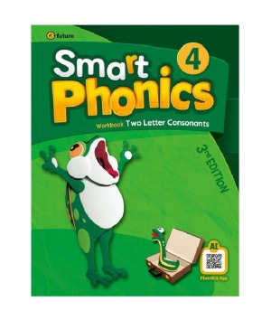
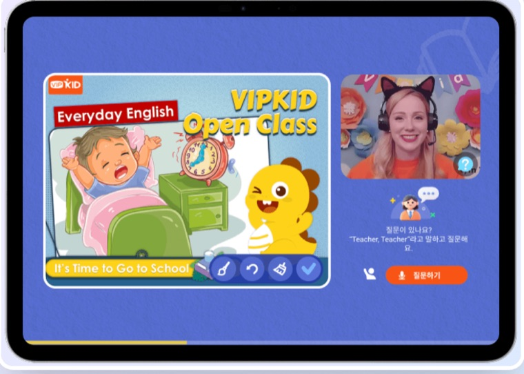
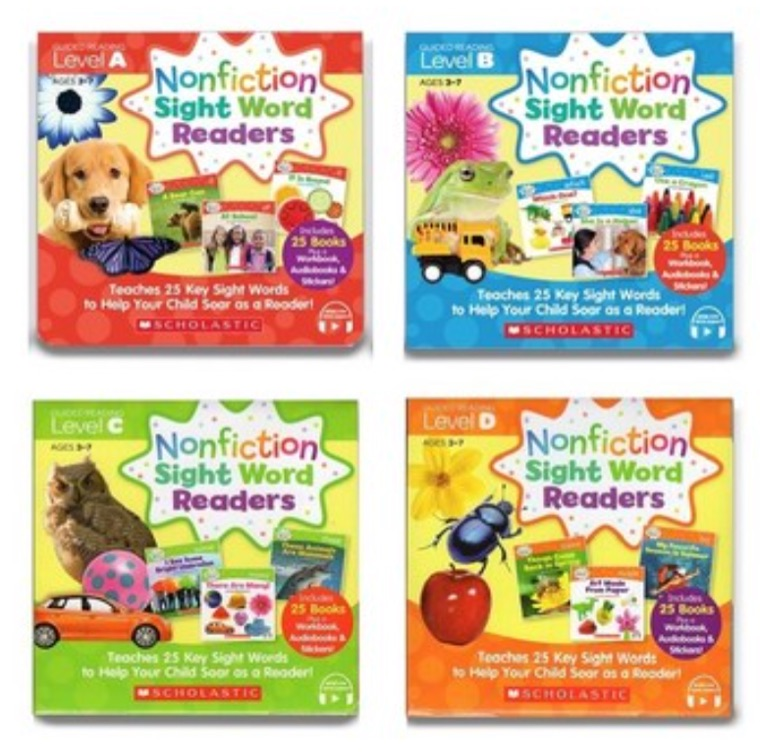

0
STEP 0 · 7세 하반기
아직은 '공부'보다 '노출'
이 시기엔 정해진 교재나 루틴 없이, 영어를 캐주얼하게 접하는 정도였어요. 초1부터 본격적으로 시작할 예정이라 워밍업 느낌으로 진행했어요.
영어 노출 (AI 앱)
유즈프렙
미국식 공교육 커리큘럼을 따라가는 AI 학습 앱. 아이패드만 건네주면 AI가 난이도를 알아서 조절해주고, 30분 되면 자동 종료돼요.
아이패드로 가볍게
💬 투빈맘 한 줄 기록엄마는 편하고 아이는 재밌는 정도로만 노출시켰어요. 진짜 시작은 초1부터라고 생각하고 부담 없이 흘려보냈던 시기예요.
1
STEP 1 · 초1 1학기 (3~5월)
영어 루틴, 처음 만들기
입학 후 3월엔 학교 적응이 우선이라 쉬어가고, 4월부터 천천히 영어 루틴을 세웠어요. 파닉스로 소리를 익히고, 집중듣기·영상을 매일 조금씩 병행하는 시기예요.

파닉스
스마트 파닉스
읽기 기초를 다지는 소리 연결 훈련. 직접 가르치기보다 인강으로 진행해요.
하루 1챕터 · 30분

집중듣기
ORT 1~3단계
집듣 첫 시작! 엄마와 손가락으로 문장을 짚어가며, 해석보다 소리 흐름 익히기에 집중했어요.
하루 3권

영어 노출
영어 영상 노출
식사 시간을 활용해 자연스럽게 노출. '공부'가 아니라 환경으로 만드는 게 핵심이에요.
하루 30~60분
💬 투빈맘 한 줄 기록집듣할 땐 항상 손가락으로 따라가며 듣기 훈련을 했어요. 완벽주의가 있는 아이라 화상영어는 몇 번 하다 멈췄어요 — 영어를 어느 정도 배운 뒤에 다시 시도하는 게 낫다고 판단했어요.
2
STEP 2 · 초1 1학기 (5월~)
한 단계씩 늘려가는 시기
루틴이 자리 잡으면서 파닉스 빈도는 줄이고, 집중듣기 레벨은 올리고, 화상영어 AI를 새로 추가했어요. 완벽주의 성향 때문에 실전 화상영어 대신 AI로 부담을 덜었어요.

파닉스 · 인강
스마트 파닉스 (인강 활용)
매일 하던 파닉스를 주 3회로 조정. 학원에서도 많이 쓰는 교재라 무난해요.
주 3회 · 1챕터 30분

화상영어 · AI 복습
다이노 AI (화상영어 대체)
아직 실전 화상영어는 부담스러워하는 시기라, AI와 듣고 말하며 습관을 만드는 용도로 딱 좋아요.
할인 코드: 1년 DINO8584 / 1개월 DINO3012
주 2회 · 1강 30분
할인 코드: 1년 DINO8584 / 1개월 DINO3012
집중듣기
ORT 3~4단계
1~3단계에서 한 단계 올라온 시기. 여전히 해석보다 흐름으로 이해하는 데 집중해요.
하루 3권
📈 뭐가 바뀌었나요파닉스 매일 → 주 3회로 조정 · ORT 1~3단계 → 3~4단계로 레벨업 · 화상영어 AI(다이노) 새로 추가
계속 이어간 것 · 영어 영상 노출은 그대로 하루 30~60분씩 유지했어요.
3
STEP 3 · 여름방학
파닉스 마무리, 사이트워드로 전환
여름방학부터 파닉스를 마무리하고 사이트워드를 시작했어요. 형아 경빈이 때 썼던 스콜라스틱 사이트워드를 그대로 활용하되, 집중듣기로 소리·글자를 연결하고 직접 낭독까지 하는 방식으로 진행 중이에요. 여기에 알파벳 라이팅까지 조금씩 추가했어요.

사이트워드
Scholastic 사이트워드 리더스 (A~D)
자주 나오는 단어부터 반복해서, 외우기보다 보고 듣고 읽으며 자연스럽게 익혀요.
하루 3권 (집중듣기)
낭독
낭독 루틴 (사이트워드 활용)
집듣했던 책을 직접 소리 내어 읽으며 유창성을 키워요. 틀려도 멈추지 않고 끝까지 읽는 흐름을 유지해요.
하루 1권
라이팅
알파벳 라이팅 연습
줄에 맞춰 대문자·소문자를 쓰며 영어 쓰기 첫 발을 뗐어요. 많이 쓰기보다 짧게 반복하는 데 집중해요.
하루 2장

영어 노출
영어 노출 영상 20선
투빈맘이 실제로 보여주는 영상 20선. 완벽 이해보다 소리와 표현에 익숙해지는 게 목표예요.
매일 60분 이상~
📈 뭐가 바뀌었나요파닉스 마무리 → 사이트워드로 전환 · 낭독 루틴 새로 시작 (듣기 → 말하기로 연결) · 알파벳 라이팅 시작 (쓰기 첫 발) · 영상 노출 시간 30~60분 → 매일 60분 이상으로 확대
계속 이어간 것 · 다이노 AI 화상영어는 하루 1회씩 계속 이어가고 있어요.